宝来宝来神社/熊本県南阿蘇町
熊本市街から空港を過ぎ、しばらく車を走らせるとどんどん標高が上がってくる。
そして俵山を越え、南阿蘇村（旧久木野村）に入ると一気に風景が変わる。南阿蘇全域から遠くの阿蘇山までが一気に見渡せる。
絶景かな絶景かな。
その日本とは思えないダイナミックな風景の中に不釣合いな軽自動車がポツンと停まっている。
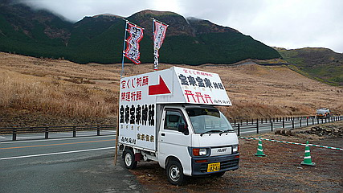
宝くじ祈願 開運祈願 宝来宝来神社
ズバリ宝くじ当籤祈願のインディーズ神社なのである。
…普通の神社ではないことを全力でアピールしているかのような素敵な看板。
そして宝来宝来（「ホギホギ」と読むのだよ）という人を食ったようなネーミング。
矢印がついている、ということはいつもココに停めっぱなし、ということなのだろうか…
その先を見れば、木々の間を縫って細い道が続いている。
この時点で阿蘇の雄大な風景に感動した素直な心は十万億土の彼方へさようなら。欲の皮がつっぱってパンパンですわ。
実はこの宝来宝来神社参拝にあたって事前に仕込んでおいたモノ…それは年末ジャンボ宝くじ連番１０枚。
これで３億当てて大仏建立でもするか！いや、モンゴル国債買って一生遊んで暮らす手もアリか…などと膨らむ期待は青天井。
途中途中に現れる道案内の看板だけを頼りに道を進んでいくと…
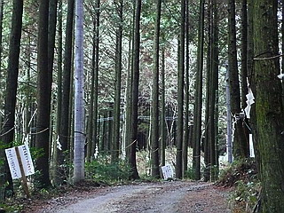
うおっ！
人里離れた山中に突然現れる真紅のパラダイス！
動悸、血圧、血糖値が急上昇。おっとっとフラバン茶飲まなきゃ。
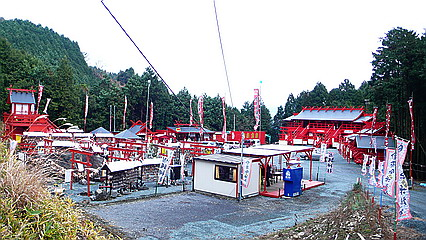
それにしても真っ赤赤ですやん。
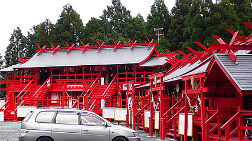
数多くの赤い社殿に赤い鳥居、幟まで赤くて、もう、目がチカチカしてきます。
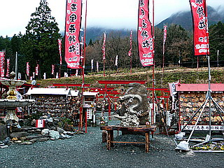 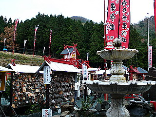
境内には無数の絵馬が奉納されている。みんな俺だけ当たりますようにというわがままなお願いばっかりなのだろう。
ナンバーズ用のルーレットまで備えた親切設計。
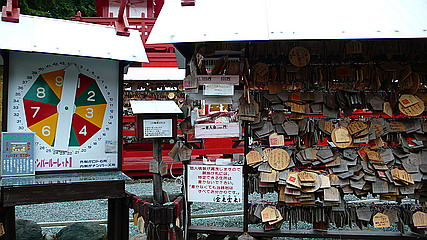
そもそも何でこんなキテレツな神社が出来上がったのか。境内のあちこちにあるキテレツ気味な説明書を抜粋すると…
平成16年にリストラされた重機の運転手が工事を行っていたところ大きな岩に当たりました。その岩を取り壊そうとしましたが、突然重機が動かなくなりました。そこで修理を行いその岩を取り壊そうとすると、また原因不明で重機が壊れました。
その日の夜、夢に岩が出てきて 「どうして私を壊そうとするのか？」 と言いました。そこで運転手は 「生活の為に金が必要だ」 と答えました。すると岩は
「それなら宝くじを買いなさい。そして当たった、お金の一部で私を掘り出し祀ってくれないか？」 と言われました。 そこで運転手は半信半疑で宝くじを買ったところ、生活に困らない程度が当銭しました。
その話を聞いた四国の友人がこの岩を拝み、その年の宝くじを買ったところ途方も無い金額が当銭したそうです。その噂が広まり、誰ともなく、この岩を当銭岩
と呼ぶようになりました。 当銭された参拝者の方々より、たくさんのご寄付を頂き当地を宝来宝来(ホギホギ)神社として建立いたしました。
…だそうです。
リストラされた重機の運転手というくだりが何とも味わい深いではないか。
リストラ〜お告げ〜当籤〜当籤〜神社建立、というアゲアゲの目出度噺。こうして平成の日本にまたひとつ神社が増えた、というわけである。
で、件の当籤岩。
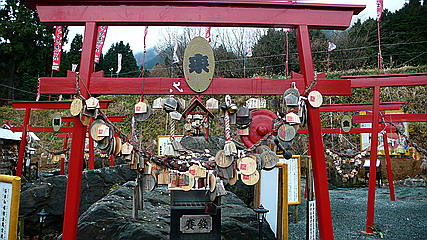
勿論岩自体にも絵馬や賽銭がうずたかく積まれている。
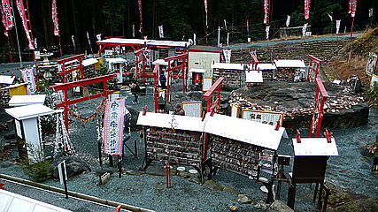
たくさんの鳥居に囲まれしかも向きがマチマチなのでマッドな印象をぬぐえない。
しかも何故か「ホギホギ」と唱えながらこの岩を廻るらしい。
「当神社の建立及び祈願の方法は夢のお告げどおりに作られました」。
夢のお告げには誰も敵わないし異論を挟む余地もないのだが、これから参拝する身としてはもう少しちゃんとした夢を見ていただきたかった、と思う。
う〜む。やらなきゃいかんのか〜。
いやいや。夢のモンゴル国債のためだ。やらなきゃ。ホギホギィ〜…超恥ずかし〜。
罰ゲーム並みの参拝を終え、ついでに岩の隣のひときわ高くなっている社殿に参拝する。
…もう恥ずかしいのでホギホギしませんでした…
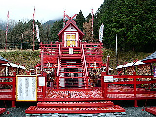 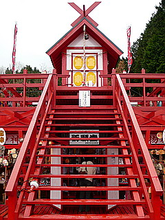
ちなみにここの建物全部に言えるのだが、100メートル位離れて見ると立派な社殿なのだが、近くで見ると…何といいましょうか…ログハウスみたい。鳥居とか丸太じゃなくって角材だし。まあ、それが逆に前のめりなゴージャス感を醸し出しているんですけど。
社殿の真下には祈願堂が。
沢山のミニ幟が奉納されていた。勿論お願い事はただひとつ。私だけが当たりますように。
みなさんホギホギやったのだろうか？
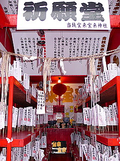 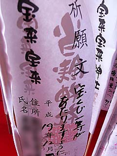
隣には開運グッズ売り場。
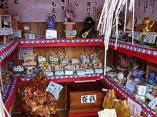
この神社には何箇所かこのようなグッズ売り場があるのだが、どこも無人販売である。
というか、この神社には神主どころかスタッフさえいるんだかいないんだかよく分からなかった。
グッズ購入者は手前の賽銭箱に料金を入れるセルフシステムになっている。
そんなんじゃ万引きされ放題じゃん、とも思えるのだが、考えてみればここに来る人はみな宝くじ当籤を真剣に願っている人ばかりである。だからキッチリ料金を賽銭箱に納めるし、たまたま通りがかる人もいなけりゃ万引きするような心ない人も来ない辺鄙なロケーションなのだ。しかも瀬戸のフクロウや招き猫といった開運、宝くじ当籤に興味のない人にとってはまず必要ないであろう品揃えというのもミソである。
人件費をかけない商売のアイデアとしては秀逸だと思う。
さらに無人販売の極みがこちら。
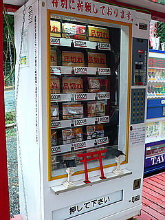 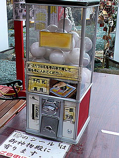
数珠などの開運グッズを取り扱う自販機と謎の開運ボールを販売するガチャポン。
こちらは無人販売コーナーで扱われているモノよりも若干高額なお品。
千円札が使えるガチャポンなんてあるんですね…ホギホギ。
で、そんな無人開運コーナーで買ったのがコレ。
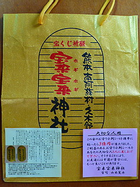
宝来宝来神社紙袋。
これに現ナマ詰め込んで来いや！と言わんがばかりの金色の輝き。
この後、この紙袋にタオルと石鹸をいれて温泉にいったんですけどメチャ恥ずかしかったっす…
ちなみに画像左下の小判型のシールは無料配布。友達にもジャンジャン福を配っちゃってね、の太っ腹設計。
私も遠慮せず、知人への土産に幾つか配り、喜んでもらったり、嫌がられたり…
そんなこんなで一番奥の御宝物殿に向かう。
…かなり辺鄙な場所なのに参拝客が次から次へとやって来るところが恐ろしい…
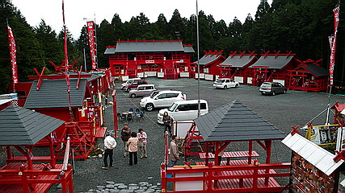
2階建ての社殿はひときわ大規模で、説明書きの看板の数がさらにパワーアップ。
これから参拝するであろう八百万の神々の紹介が独自の解釈でなされている。
龍神サマが会社の人間関係や業績にご利益があるとは知りませんでした。
ちなみに布袋サマはストーカーとかニートに効くそうです。って布袋サマはそんなの知らんぞ！
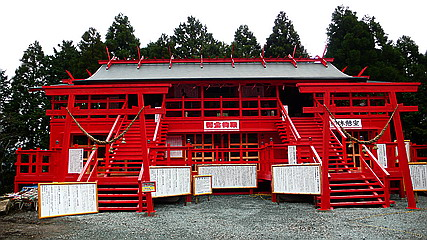
仰々しくもチープな階段をのぼっていく。
ちなみに一階は休憩所です。
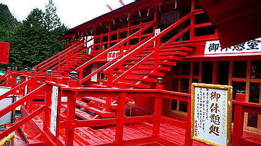
横長の社殿は幾つかの部屋に分かれていてそれぞれに開運請負の神様が鎮座している。
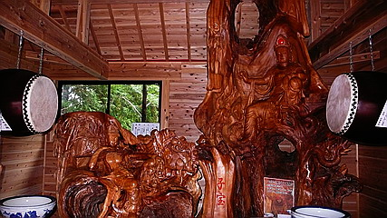
↑見難くて恐縮だが左右とも木に観音サマが刻まれている。
ちなみに向かって右側の観音サマの股の間から顔を出すとこれまた開運。ホギホギ。
他にも目出度そうなモノなら片っ端から並べちゃえ！的なラインナップで建物の中は満たされている。
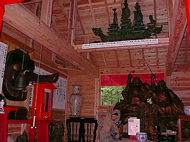 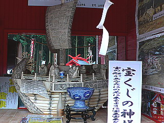
いちいち突っ込んでも良いんですけど、明日の朝までかかっちゃうので割愛させていただきます。
独自の幸福理論と経営理論が交差する開運の殿堂。
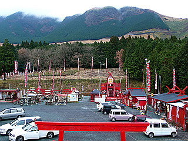
阿蘇山もビックリ！な脳内マグマの溶岩流。今日も今日とて赤く赤く燃え上がっております。
さてさて、気になる年末ジャンボの結果を報告せねばなるまい…
…やっぱちゃんとホギホギしとけば良かったあ〜！
今度はtotoBIG握って再出撃だ！
宝来宝来神社のホームページがありました。こちらです。
2007.12.
珍寺大道場 HOME